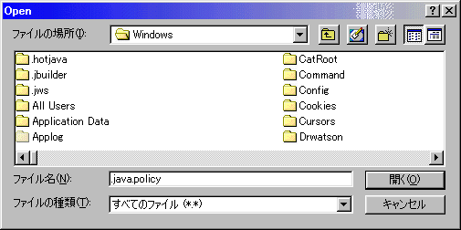
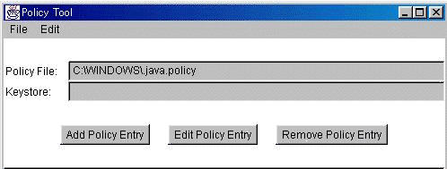
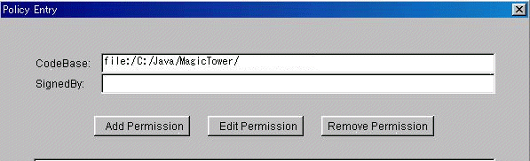
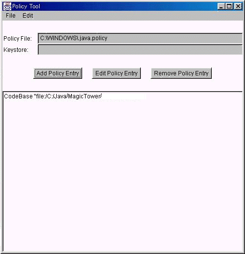

How to be able to save
1. First, you execute "policytool.exe"in C:\jdk1.3\bin.
(or C:\jdk1.2.2\bin)
You will see next picture.
This is indicating no file which set up.
2. You click [OK] .
Next screen if you do.

3. You click [File] in menu.

4. You click [Open] .
The dialog for open the file execute. You choose folder
of Windows. The under figure is indicating choose folder of Windows. But
the contents will be difference.(The under figure is case of Japanese-Windows dialog.)

5. File name is .java.policy.
And you click [open].
(Attention. File name is piriod and java and piriod and
policy. All word is a small letter.)Repeat again.
File name is starting from piriod.
You click [open] if you finished input file name.
You will see next message.

This message is no file. Now only file name set. So natually.
You are right to ignore it.
You click [OK]
Next screen.

6.You click button of [Add Policy Entry]
You will see next dialog of Policy Entry if you do.

7.You have to input folder name which you install this
application in CodeBase.(Ex. file:/C:/Java/MagicTower/)
Attention. You have to notice a capital letter and a
small letter. Starting word is "file:/" invariably.
And last word is "/".The mark of an end of folder is "/" , not "\"

8.You click [Add Permission] if you have input CodeBase.

9. Next you click pull down menu of Permission:

10. You chooce "FilePermission" of forth.
11. In the same way, you chooce "<<ALL FILES>>"
in Target Name.
12. In the same way, you chooce "write" in Actions.
It is good to refer next screen.

13. You click [OK] if you could set in the same way. Is your scrren under figure ?

14. You click [Done] .

15. You have to chooce [save] in menu. You will see next message if you finished.

16. You click [OK], and close "policytool"(You click [EXIT]
in menu.)
17.You are starting "Magic Tower". There is "Save" in
popupmenu (right click). You successed if you could see "Executing..." and "Saved." in status.
This set is only this applet. Other applet don't apply. This applet "Magic
Tower" write to under one's folder. So, you cann't
save when you change folder name of this application.
Enjoy and good time by this game. (^^)/~
You have to refer next site if you had a question. (for Solaris) (For Windows)
Addition. You have to close "policytool" and you delete ".java.policy"file in Windows folder if you did strange set.
Good Luck ! (Oz wrote Jan 18, 2001)